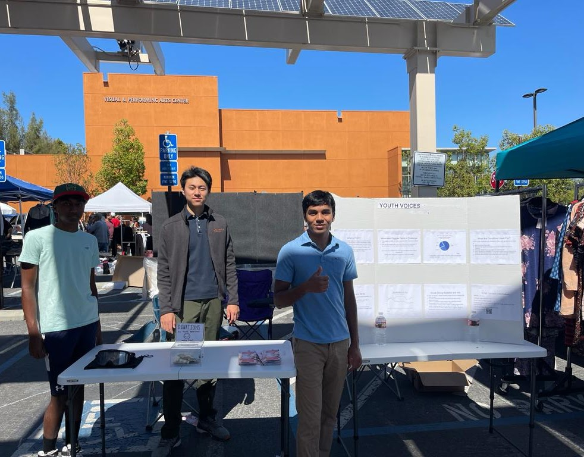
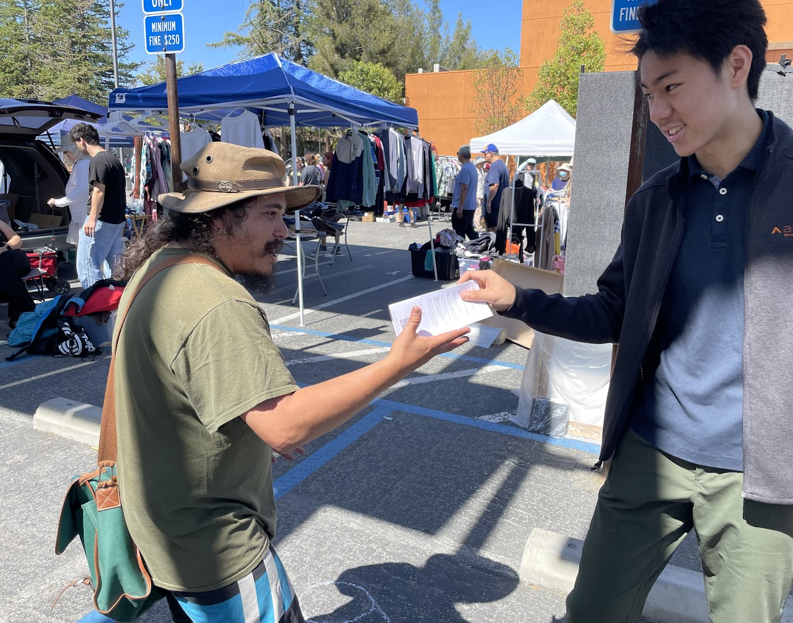

Information and Demo Booth - San Jose - 7/1/23
A Great Success!
YVSF held an informational booth at the De Anza Flea Market in Cupertino, California on July
1st,
2023, where we spread our message to hundreds of people for over 4 hours. Our organization
gained
exposure to the 20,000 shoppers at the flea market! Our booth included a trifold detailing drunk
driving and how our organization aims to raise awareness, as well as a plethora of other
information. Along with the trifold, we passed out flyers with information about our mission,
facts
and myths about drunk driving, statistics, and how you can prevent drunk driving if you see it.
We
had a donation box and handed out water bottles for free. The most interactive part of our booth
was
our intoxicated vision goggles we had attendees try on. These goggles make people see what you
would
see if you were drunk with a BAC between 0.08 and 0.15. We chalked out a challenging zig-zagged
path
on the floor had people try to walk through the path with the goggles on without stepping out.
We
talked to so many people and many of them read our information, took a flyer, donated, and tried
the
path. Out of the people we spoke to, they said they really appreciated what we were doing and
that
they learned a lot about drunk driving, why it is so dangerous, and how to stop it if it they
witnessed it. Overall, the community was very pleased with what YVSF is doing and hope we
continue
to spread our message!

